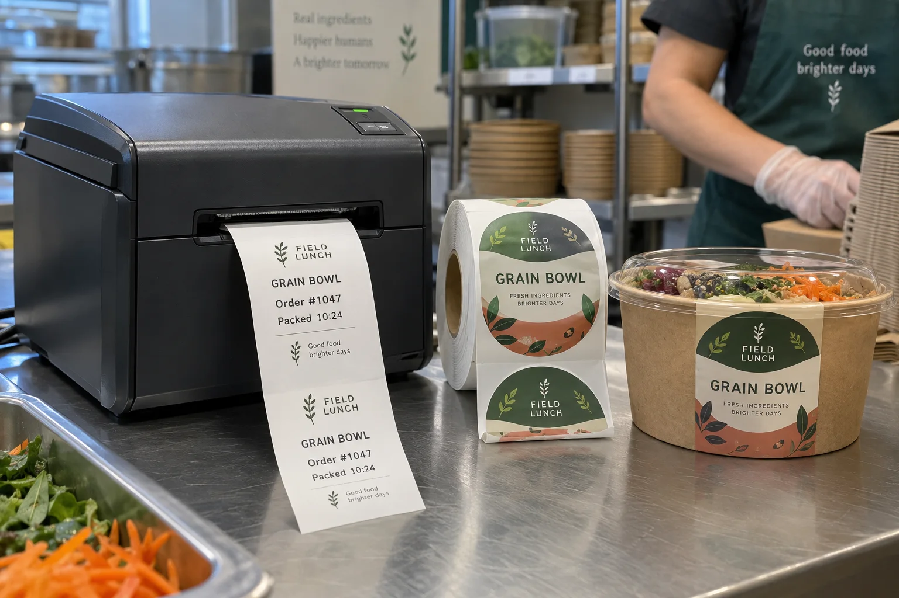

The short takeaway order label fits neatly on the bowl. A longer item name, option list or language version can produce a different output length and a different placement problem, even with the same media width.
Review representative longest outputs through printing, cutting and actual pack placement before choosing the linerless workflow. A successful short desk sample does not represent the whole order range.

AI-generated illustration retained on this article only. Fictional packaging, equipment and details; no measured result or actual customer/factory record.
Choose representative output cases deliberately
List the actual fields the station must print and identify the relevant combinations that occupy the most space. Use approved representative data without exposing real customer information. The longest name alone may not produce the longest layout when modifiers or additional language blocks are present.
Keep the template and printer/media/cutter combination identified. Variable-length capability is a property to confirm for the actual system, not a promise that every printer handles the proposed material. Record limits supplied by the equipment owner rather than guessing from the roll width.
| Output/placement case | What to record |
|---|---|
| Payload | Representative fields and why this case matters |
| Template | Actual version, width and content arrangement |
| Output boundary | Intended cut/tear location and required blank areas |
| Physical length | Actual result or pending, not a screen assumption |
| Pack location | Usable area, seams, closure and existing information |
| Handling | How staff identify, separate and place the output |
| Exception route | Approved response when content does not fit |
The matrix supplies no universal cutter setting, length limit or blank-margin dimension. Obtain the applicable requirements for the actual station.
Inspect the whole output after separation
Check that the intended label contains the complete approved content and that separation has not divided a field or attached another order's content. Do this under the station's approved operating and inspection procedure; the article does not describe cutter access or adjustment.
If a longer output is folded, wrapped or repositioned to fit the pack, evaluate the resulting reading and information relationships. A label that covers an existing required block or crosses an unintended opening is not resolved merely because the printer produced it correctly.
Plan an exception before rush-hour use
Ask the workflow owner what should happen when the input or layout exceeds the approved scope. Options may include a reviewed alternative template, a different label location or a separately approved format. Do not let staff solve every long output by reducing text, omitting fields or using unapproved abbreviations.
Compare that actual workflow with a preprinted die-cut label and any later-print zone it needs. One format may handle changing order data while another supplies stable brand presentation. The fair comparison includes the represented payload cases and pack placements, not only labels per roll.
Repeat the affected check when the template changes
A new language block or ordering-system field can change the physical output while the media stays identical. Keep the change linked to the representative cases so the station owner knows which checks must be repeated.
Use later-print surface planning, copy capacity and thermal equipment/consumables for those separate inputs.
Start with the information that changes every order
At a takeaway counter, the item name, time and order number change constantly. A central kitchen may also need a colorful fixed brand label on the bowl. Buyers sometimes try to make one roll solve both jobs. A buyer could first draw the workflow: what is printed at packing, what is printed in advance and where each label lands.
Avery Dennison's printer compatibility announcement describes a particular linerless direct-thermal material validated with a particular printer. That specificity matters. Linerless is a system choice, not a promise that any existing thermal printer can accept a roll with no backing.
One rush-hour counter and one branded meal kit
Consider a composite quick-service kitchen marking hundreds of takeaway bowls with a short variable order label. Staff want fewer liner scraps at the station and fewer roll changes. A compatible linerless printer may be worth testing. The same kitchen's retail meal kit needs illustrated full-color branding, stable product copy and a carefully controlled front panel. A preprinted die-cut pressure-sensitive label remains a different, sensible choice.
The retail branding job and the changing order-data job should be evaluated separately. Neither format should be selected solely to eliminate the other task.
Compare the whole station, not just the roll
| Question | Linerless direct thermal | Preprinted die-cut |
|---|---|---|
| Variable information | Printed at use on compatible equipment | Can use an overprint area if construction allows |
| Full-color branding | Usually not the main strength of a basic thermal station | Can be planned into a complete printed design |
| Backing waste | No separate release liner in the intended system | Release liner requires collection or disposal plan |
| Equipment check | Printer, cutter and media compatibility are essential | Core, gap, sensor and applicator setup are essential |
Avery Dennison's linerless overview describes operational benefits for its own blank direct-thermal system. Treat its roll-yield figures as product-specific, not a guaranteed saving for your kitchen. Obtain a station trial and compare actual roll changes, rejected labels and handling time.
What a fair trial looks like
Use the actual food container, printer, order data and shift workflow. Confirm label length variation, tear or cut behavior, print readability, adhesion on the package and how operators handle mistakes. If the bowl is warm, oily or chilled, validate those application conditions on the proposed construction. A sample printed on a desk is not an acceptance test for a busy packing line.
For preprinted labels, confirm whether later date or order coding is needed. Inks, overprint area and printer technology must be compatible. If both a variable-data and brand label are used, place them so neither covers ingredients, allergens, a barcode or any required package information.
Buying checklist
- List fixed artwork and changing data separately.
- Identify every printer and applicator by exact model.
- Test the actual container at packing temperature.
- Compare full station cost, not only roll price.
- Review waste handling and required copy placement.
For another format decision, compare roll and sheet labels. For a conventional print-on-demand workflow, read direct thermal versus thermal transfer.
Send the relevant project details
Discuss a variable-length food-label workflow with printer/media references, representative longest layouts, actual pack location and the fixed-brand-label requirement. The form opens an email draft; use listed email or WhatsApp for files. Equipment compatibility, lengths, format options and station evaluation need confirmation.